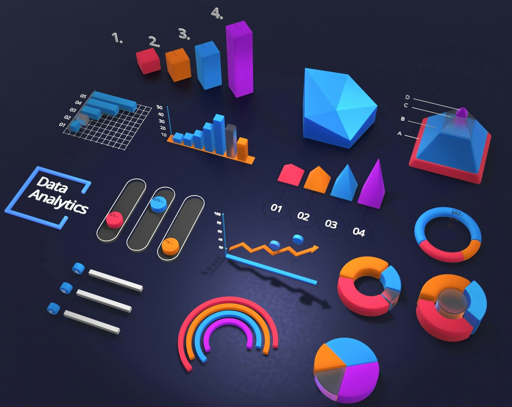

Data Cleaning
In SQL
Global Tech layoffs datasets from the period of COVID-19 to the present.
SQL, Tableau and Power BI enthusiast—bringing data to life one visualization at a time!
Global Tech layoffs datasets from the period of COVID-19 to the present.

Transforming a spreadsheet into an interactive Excel dashboard to showcase bike sales.

Tableau dashboards on Airbnb listings and pet ownership (cats vs. dogs) in the United States.

A comprehensive Power BI dashboard to visualize and analyze Texas Medicaid enrollment trends and statistics.

This project provides an in-depth analysis of key performance indicators (KPIs) for Toy Stores across various locations, utilizing Power BI to visualize and interpret the data effectively.